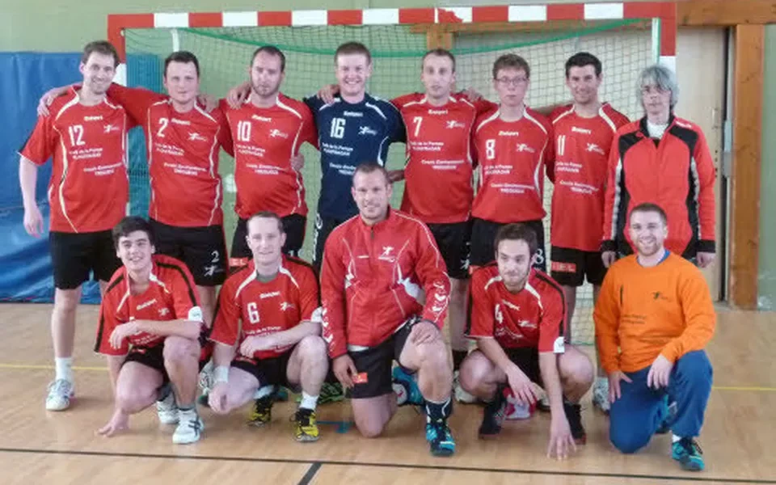
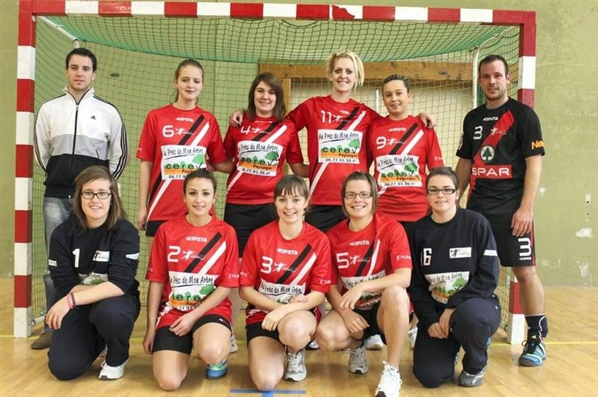
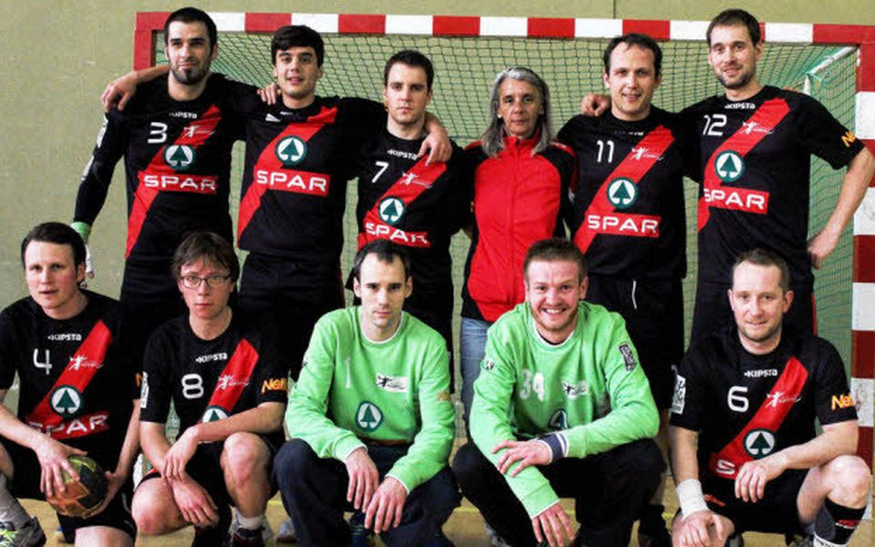
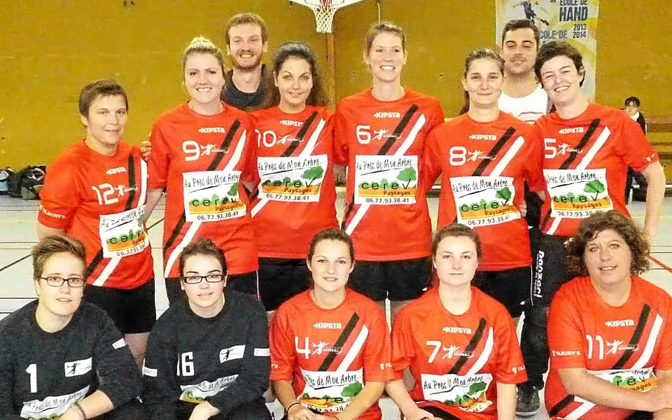
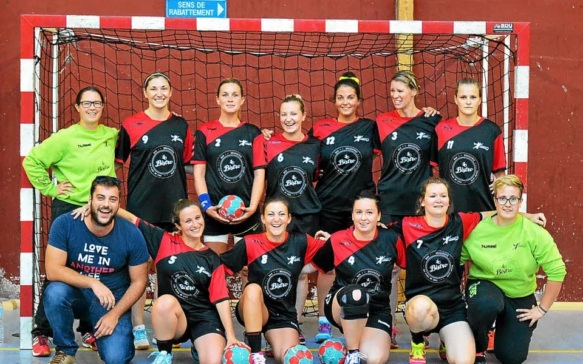
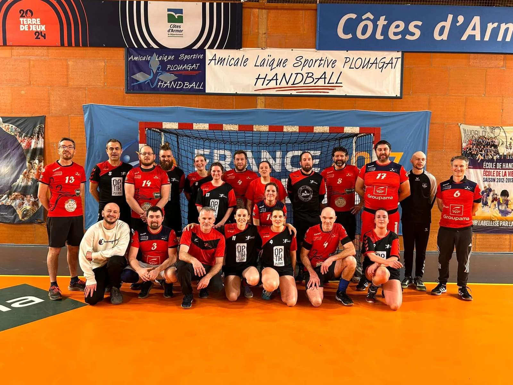
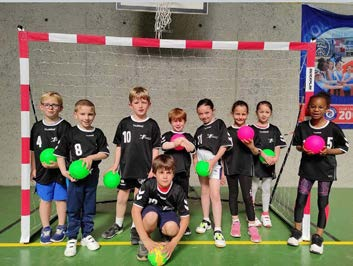
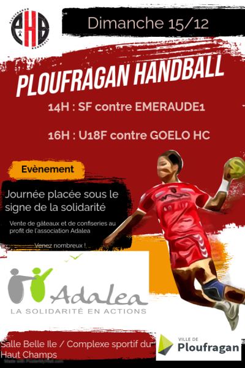
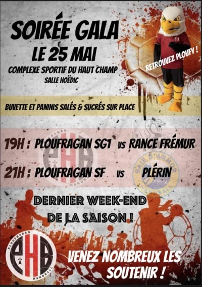
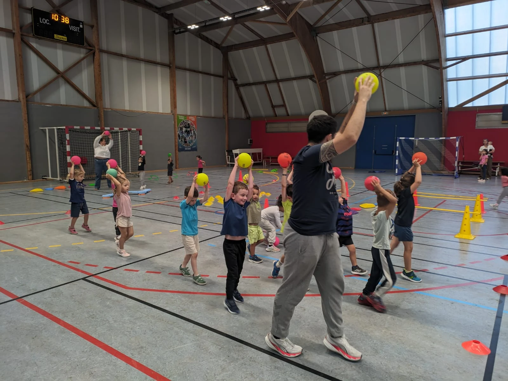

Club · Histoire · 1990 → 2026
PHB : l’histoire d’un club qui a rebondi
Avant les résultats, les montées et les équipes d’aujourd’hui, il y a eu une première aventure, une longue pause et surtout une bande de passionnés décidée à faire rebondir le handball à Ploufragan.
Le PHB actuel est né en 2011, mais le handball ploufraganais avait déjà une histoire. Mis en sommeil en 1990, il a attendu plus de vingt ans avant de reprendre sa place dans la commune.
Depuis, le club a grandi avec ses joueuses, ses joueurs, ses coachs, ses familles et ses bénévoles. Voici cette histoire racontée depuis l’intérieur : avec des classements, bien sûr, mais surtout avec les personnes qui ont fait vivre chaque saison.

- 1990Une première aventure se met en pause
- 2011Le PHB renaît officiellement
- 2017Première montée masculine en région
- 2019Les féminines rejoignent la région
ÉTAPE 01
Le handball était déjà passé par Ploufragan
L’histoire ne commence pas sur une page blanche. Une première structure avait existé avant une mise en sommeil en 1990.
Le ballon est rangé pendant plus de vingt ans. L’envie, elle, ne disparaît jamais vraiment.
Temps mort très long. Fin du match ? Pas du tout.
ÉTAPE 02
Trois passionnés relancent le jeu
Gaëtan Le Gratiet, Pierre-Yves Boivin et Gilles Boivin remettent le handball sur le terrain. L’association Ploufragan Handball est créée le 18 avril 2011, puis publiée au Journal officiel le 30 avril.
Cette fois, le PHB est bien reparti. Il reste tout à construire, ce qui tombe bien : le club ne manque ni d’idées ni d’énergie.
ÉTAPE 03
Le club grandit déjà
Un an après la relance, une équipe féminine voit le jour. Deux nouvelles équipes sont annoncées à la rentrée et les premiers week-ends victorieux donnent rapidement le ton.
À Ploufragan, on comprend que cette renaissance n’est pas un simple essai. La dynamique est lancée.
Nouvelle équipe, nouveaux maillots, mêmes envies de jouer ensemble.
ÉTAPE 04
Les premiers résultats arrivent
Deux ans seulement après la relance, les résultats suivent. Les féminines, entraînées par Corine Grandjean, gagnent leur accession à l’échelon supérieur. Les masculins réalisent eux aussi une saison remarquée.
Le jeune club commence à installer son identité sportive : travailler sérieusement sans perdre le plaisir d’être ensemble.


ÉTAPE 05
Trois équipes seniors, trois premières places
Les trois formations seniors terminent premières de leur groupe. L’équipe fanion masculine monte en prérégionale.
Le PHB compte alors 114 licenciés et cherche déjà de nouveaux joueurs et dirigeants. Trois saisons ont suffi pour passer de la relance à un club solidement installé.


ÉTAPE 06
Les féminines s’installent en Prérégionale
En 2016, les seniors féminines évoluent en Prérégionale. Le PHB confirme que sa progression se construit autant avec ses équipes féminines que masculines.
Le groupe prend de l’expérience et prépare déjà les saisons qui le conduiront, quelques années plus tard, jusqu’au niveau régional.

ÉTAPE 07
Les garçons ouvrent la porte de la région
Les deux équipes fanions évoluent en prérégionale. En juin, une soirée de gala à Belle-Île accompagne un match décisif pour les masculins.
Le PHB termine premier de Pré-Région masculine et accède en Régional 2. C’est la première montée régionale masculine depuis la renaissance du club.
Belle-Île, une salle pleine et un ticket pour la région : le genre de soirée que l’on raconte encore après le dernier coup de sifflet.
ÉTAPE 08
Les féminines écrivent leur page
Avec 14 victoires, un match nul et trois défaites, les seniors féminines terminent premières et deviennent championnes de D1 territoriale.
Sous la direction d’Aurélien Gérard, elles accèdent à l’Excellence régionale. Après les garçons, les filles font à leur tour entrer le PHB dans une nouvelle dimension.
Une montée de plus, mais surtout une histoire qui se conjugue enfin au féminin comme au masculin.
ÉTAPE 09
Le loisir entre dans le jeu
En 2021, le PHB ouvre sa section loisirs. Une nouvelle porte d’entrée dans le club pour jouer sans pression, retrouver le terrain et partager un moment convivial.
Mixte et ouverte à tous les niveaux, la section complète le projet du club : il y a de la place pour la compétition, la formation et le simple plaisir de jouer ensemble.
Le lundi soir, le chrono compte moins que le sourire après le match.

ÉTAPE 10
Former, accueillir, transmettre
Le PHB développe progressivement ses équipes de jeunes. L’ouverture du Baby Hand permet aux enfants dès 3 ans de découvrir le jeu, le mouvement et le plaisir du collectif.
Le club participe aussi à des opérations de découverte comme Handball Toi. Les enfants entrent par la motricité, apprennent les règles et grandissent parfois jusqu’aux équipes seniors.

ÉTAPE 11
Jouer pour une cause plus grande que le score
Le 15 décembre, une journée solidaire réunit le club autour d’Adaléa. Les U18 féminines portent un maillot conçu aux couleurs de l’opération.
Matchs, buvette et gâteaux permettent de reverser 390 € à l’association. Le tableau d’affichage finit par s’éteindre ; la solidarité, elle, reste.


ÉTAPE 12
Six mois sans Hoëdic, mais jamais sans solution
La fermeture de la salle Hoëdic, prévue pour trois mois, s’étend finalement de mai 2024 à janvier 2025. Le club inverse des rencontres, adapte ses séances et absorbe des frais supplémentaires.
Cette période arrive au moment où le PHB se structure avec le recrutement d’un salarié. Les effectifs baissent temporairement, puis retrouvent leur niveau. La Ville accompagne ce rebond avec une subvention exceptionnelle de 1 000 €.
Changer de salle, déplacer des matchs, refaire les plannings : le bénévolat a parfois des airs de sport de haut niveau.
ÉTAPE 13
Du Baby Hand aux seniors, la même maison
Pour la saison 2026–2027, le PHB accueille les enfants dès le Baby Hand, puis l’école de hand, les U11, U13, U15 et U18, jusqu’aux seniors et aux loisirs.
Le club est présidé par Elsa Da Silva. David Imbaud, salarié du PHB, travaille avec les coachs, le bureau et les équipes de bénévoles qui font vivre les entraînements, les matchs, la buvette, la boutique, les partenariats et la communication.

ET L’HISTOIRE CONTINUE…
LES PROCHAINES PAGES RESTENT À ÉCRIRE
En quinze ans, le PHB s’est reconstruit presque entièrement. Les montées ont compté, les titres aussi. Mais la vraie continuité du club se trouve ailleurs : dans les joueuses et joueurs qui reviennent, dans les enfants qui apprennent, dans les parents qui donnent un coup de main et dans les bénévoles qui préparent la salle avant que le public n’arrive.
Cette histoire a été écrite par beaucoup de monde. Ses prochaines pages le seront encore collectivement — avec un ballon, quelques rouleaux de strap et, très probablement, du café à la buvette.
Sources et archives consultées
- Une première année réussie et les trois fondateurs — Ouest-France
- Création et identité officielle de l’association — Annuaire des Entreprises
- Bonne santé des équipes seniors — Le Télégramme, 14 juin 2014
- Soirée de gala et accession régionale — Le Télégramme, 22 juin 2017
- Création du Baby Hand et du loisir — Gazette de Ploufragan, été 2022
- Journée solidaire en faveur d’Adaléa — Ville de Ploufragan
- Travaux d’Hoëdic et soutien exceptionnel — Conseil municipal de Ploufragan, 12 novembre 2025